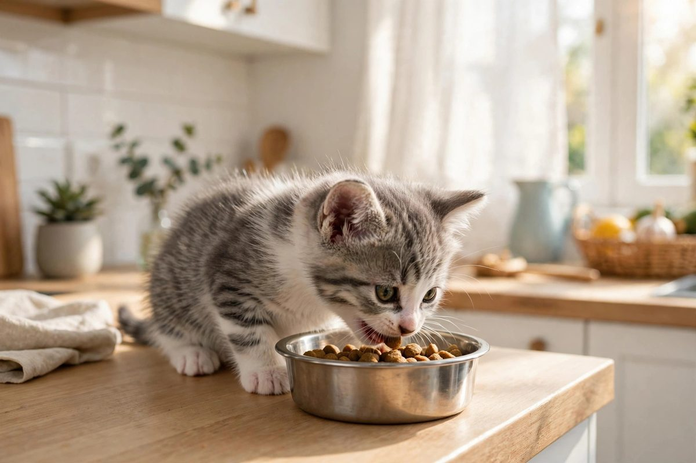

Home › Guides
Kitten Feeding: A Practical Guide for the First Year

A kitten grows fast, and its food has to keep up. In the first year a kitten can gain many times its birth weight, build bone and muscle, and develop its immune system, all on a stomach the size of a walnut. That is why kittens need food made for growth, fed little and often, rather than adult food served once a day.
How often should a kitten eat?
Very young kittens need frequent small meals because their stomachs are tiny and their energy needs are high. From weaning to about six months, offer three to four meals a day. From six to twelve months, two to three meals a day is usually enough. Spread meals evenly through the day and remove uneaten wet food after about half an hour so it does not spoil.
A regular routine helps more than most owners expect. Kittens learn quickly when food arrives, and a predictable schedule makes litter training, play and sleep easier too. If you work during the day, a timed feeder or a small meal left down in the morning can cover the midday feed.
Choosing a kitten food
Look for a food labelled complete and balanced for kittens or for growth. These foods are more energy-dense than adult foods and contain the right balance of protein, fat, calcium and phosphorus for growing bones. Wet food, dry food, or a mix of both can work; wet food adds water to the diet, while dry food is convenient and can help keep the routine simple.
Avoid foods made only for adult cats, and avoid raw meat, bones and unpasteurised milk. Cow's milk is not a substitute for a mother's milk or for a proper kitten food, and many cats cannot digest lactose well. Fresh water should always be available in a clean bowl, ideally away from the litter tray.
Weaning and the switch to adult food
Kittens usually start tasting solid food at around four weeks. Mix a little wet kitten food with warm water into a soft gruel and let the kitten explore it. Over the next few weeks, gradually reduce the water until the kitten is eating solid food confidently. By eight weeks most kittens are fully weaned.
Keep the kitten on kitten food until about twelve months old, then change to adult food over seven to ten days. Mix a little adult food into the kitten food and increase the share each day. A slow change avoids an upset stomach and gives a fussy kitten time to accept the new taste.
How much, and what to watch for
Pack guidelines are a starting point, not a rule. Active kittens and larger breeds often need more, while a quiet indoor kitten may need less. Watch the kitten's body: you should feel ribs easily under a thin layer of fat and see a waist from above. If the belly looks swollen or the kitten is losing weight, speak to a vet rather than simply feeding more.
Weigh your kitten weekly for the first few months if you can. A steady gain is a good sign. Sudden weight loss, diarrhoea, vomiting or a kitten that stops eating for more than a day all deserve a vet visit, because small animals can become dehydrated quickly.
Common mistakes to avoid
The most common mistakes are feeding adult food too early, leaving wet food out all day, and giving too many treats. Treats should be a tiny part of the diet, not a second meal. Table scraps, especially cooked bones, onion and garlic, have no place in a kitten's bowl. Keep human medicines and lilies out of reach as well, since lilies are highly toxic to cats.
Finally, remember that feeding is only part of care. Play, gentle handling, vaccinations and parasite control all matter in the first year. A kitten that eats well, plays hard and sleeps soundly is usually on the right track.
Frequently Asked Questions
When can a kitten eat dry food only?
Most kittens can manage dry food from about eight weeks, but many do better on a mix of wet and dry. Wet food helps with water intake, so a mix is a good default.
How much water does a kitten need?
Kittens get much of their water from wet food. Always keep a bowl of fresh water available, and change it daily. If a kitten drinks very little and eats only dry food, offer wet food as well.
Should kittens have milk?
No. Cow's milk often causes an upset stomach. A proper kitten food and fresh water are all a weaned kitten needs.